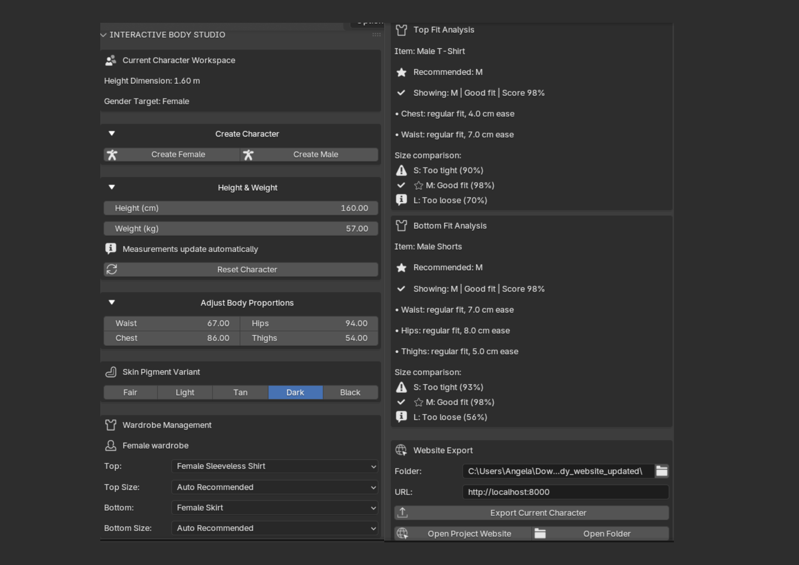
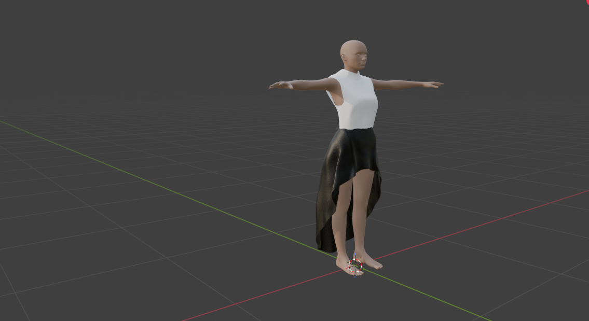
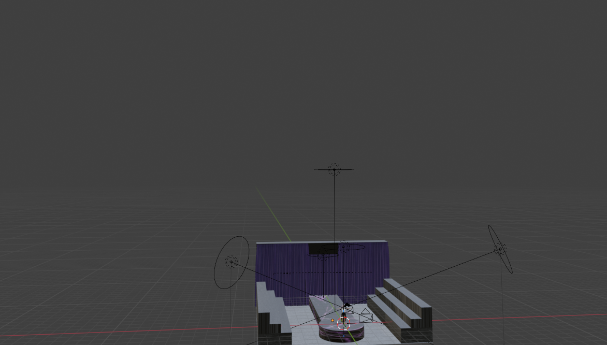

Interactive Body Studio
A Python-powered Blender system I developed to generate and customize 3D human models through a dedicated interface — covering body proportions, measurements, clothing, and material customization end to end.

From an idea to a working 3D tool
Interactive Body Studio is a Python-powered Blender system I developed to generate and customize 3D human models through a dedicated interface, rather than manually sculpting each variation by hand.
The goal was to turn a handful of inputs — height, weight, and a few key measurements — into a fully proportioned, dressed 3D character, so the system does the modeling work that would otherwise take a person hours inside Blender.
Core functionality
- Male and female base models
- Adjustable height and weight
- Adjustable body measurements
Customization
- Procedural body modifications
- Clothing selection and fitting
- Multiple clothing sizes
System
- Skin and material customization
- Automated model creation
- Blender Python API integration
Inside the studio
A visual walkthrough of the interface — more real captures can slot into the placeholders below as they're taken.



Architecture
The Blender UI collects inputs; a Python engine underneath handles generation, proportion, and clothing logic before handing back a finished model.
BLENDER UI
- Height
- Weight
- Measurements
- Clothing
- Skin
PYTHON ENGINE
- Body generation
- Proportion modifiers
- Clothing management
- Model transformation
- Scene management
What's under the hood
Python
- Blender Python API
- Custom operators
- Custom scene properties
- Automated object & collection management
3D
- Mesh manipulation
- Vertex groups
- Modifiers
- Clothing fitting
System
- Dynamic body parameters
- Gender-specific configuration
- Clothing management
- Automated model generation
Watch it in action
Curious about the code?
The full Blender Python source is on GitHub, including the custom operators and scene properties.